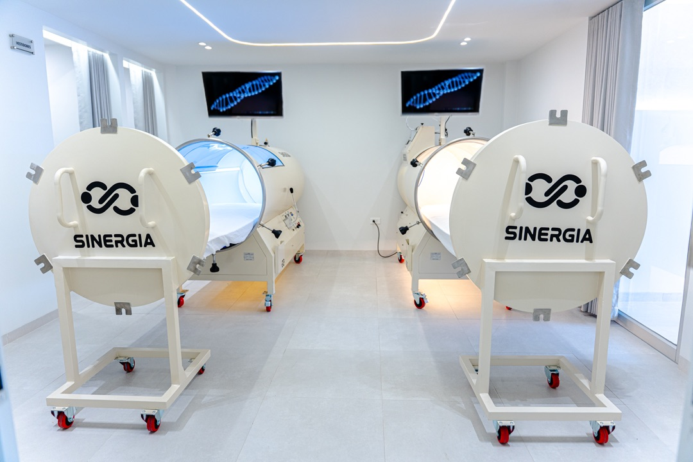
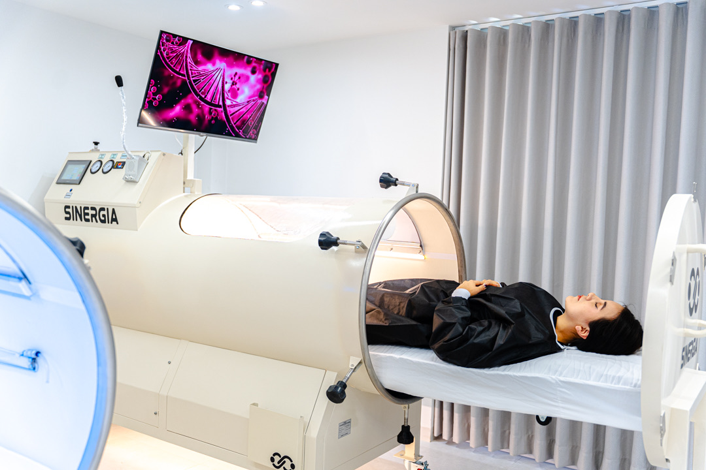

Tecnología de vanguardia
para tu recuperación y bienestar
Medicina, ciencia y biohacking con equipos de última generación
Equipos de última generación al servicio de tu salud
En SINERGIA MED combinamos medicina, ciencia y biohacking para acelerar tu recuperación, optimizar tu rendimiento y elevar tu calidad de vida. Conoce las tecnologías del primer Medical Biohacking Center de Ambato.

Cámara Hiperbárica
Oxígeno puro a presión que potencia la regeneración celular y reduce la inflamación.
Conoce más →

Láser Infrarrojo
Fotobiomodulación profunda para tratar el dolor y acelerar la reparación de tejidos.
Conoce más →
Fisioterapia Avanzada
Terapia física basada en evidencia, potenciada por la tecnología del centro.
Conoce más →
Consultorio Médico
Valoración médica integral y prescripción personalizada de tu protocolo.
Conoce más →
Cámara Hiperbárica
Oxígeno puro a presión para regenerar tu cuerpo desde la célula
Permite respirar oxígeno en un ambiente presurizado, de modo que se disuelve en el plasma sanguíneo y llega a tejidos poco irrigados, potenciando los procesos naturales de reparación del organismo.
- Acelera la regeneración celular y la reparación de tejidos.
- Reduce la inflamación y el edema tras lesiones o cirugías.
- Favorece la eliminación de la fatiga y el ácido láctico.
- Mejora la oxigenación general y apoya la longevidad.
Criogénica
Frío extremo controlado que activa la recuperación y la energía
La crioterapia de cuerpo completo expone al organismo a temperaturas muy bajas durante 2 a 3 minutos, desencadenando una respuesta que reduce la inflamación, libera endorfinas y activa la circulación.
- Reduce la inflamación y el dolor muscular tras el esfuerzo.
- Acelera la recuperación entre sesiones de entrenamiento.
- Estimula la energía y mejora el estado de ánimo.
- Complemento ideal en protocolos de rendimiento y biohacking.
Láser Infrarrojo de Alta Intensidad
Fotobiomodulación profunda para tratar el dolor en su origen
Energía lumínica que penetra hasta los tejidos profundos y activa la reparación celular: estimula la producción de energía celular (ATP), mejora la circulación y modula la inflamación.
- Alivio del dolor desde las primeras sesiones.
- Reduce la inflamación en lesiones agudas y crónicas.
- Acelera la regeneración de músculos, tendones y articulaciones.
- Terapia indolora, no invasiva y sin tiempo de recuperación.

Fisioterapia Avanzada
Terapia física basada en evidencia, potenciada por tecnología
Planes personalizados que combinan terapia manual, ejercicio terapéutico y readaptación funcional con las tecnologías del centro, para recuperaciones más rápidas, completas y duraderas.
- Valoración funcional inicial y plan a tu medida.
- Terapia manual y ejercicio terapéutico guiado.
- Readaptación deportiva progresiva y segura.
- Seguimiento de avances y ajuste continuo del plan.
Consultorio Médico
Todo empieza con una valoración médica seria
La primera cita es una valoración médica completa: historia clínica, evaluación física y objetivos. Con esa base, el equipo prescribe tu protocolo personalizado y da seguimiento a tus resultados.
- Historia clínica y valoración médica inicial.
- Prescripción personalizada de tecnologías y terapias.
- Control de evolución con citas de seguimiento.
- Orientación en hábitos, recuperación y rendimiento.
¿Listo para conocer la tecnología que acelerará tu recuperación?
Visítanos en Ambato y descubre el primer Medical Biohacking Center de la ciudad.
Agenda tu cita